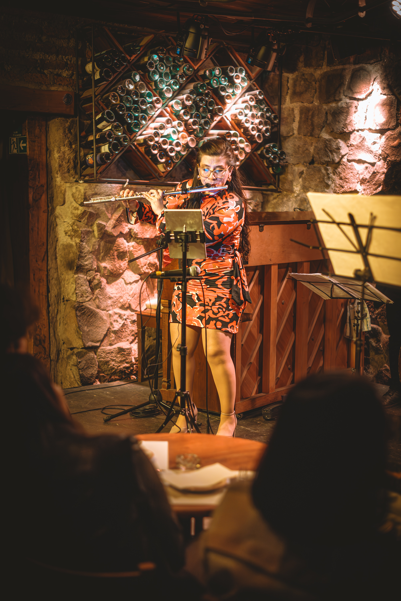
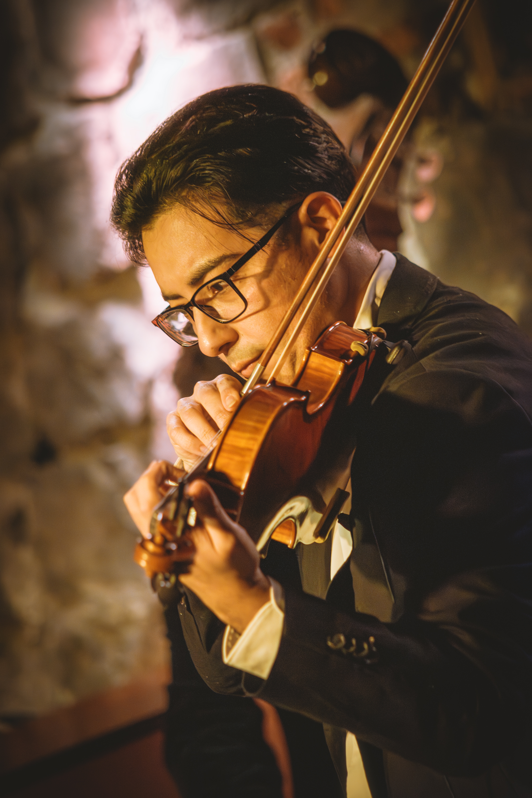
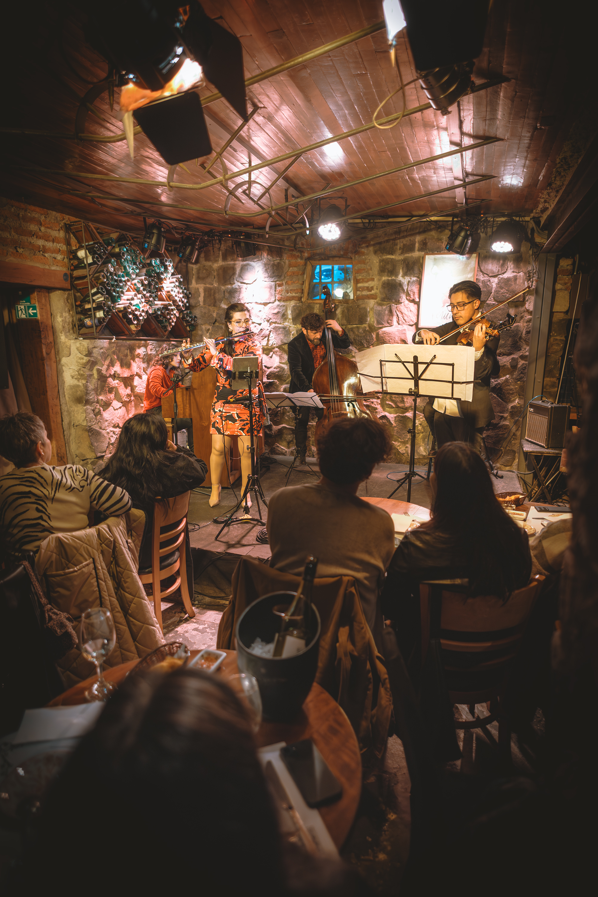

15 agosto 2026 · Santiago
Una noche dentro de la música.
El público rodeó al quinteto durante el recorrido completo de Las 4 Estaciones Porteñas. Ese registro es el que ves y escuchas en esta página.


Piazzollamente · Concierto instrumental
Un viaje a Buenos Aires a través de la música de Astor Piazzolla.
Te invitamos a recorrer con nosotros una ciudad que cambia de pulso, temperatura y ánimo a medida que avanza la música.
El viaje
Recorremos Buenos Aires desde la música de Piazzolla. A veces la sentimos acelerarse; otras veces todo parece detenerse. Pasamos de la tensión a la intimidad, del vértigo a la nostalgia, de la energía a la memoria. Las cuatro estaciones están en el centro de ese recorrido y, a su alrededor, otras obras abren nuevos rincones de la ciudad.
Escúchanos
Antes de seguir, queremos que nos escuches. Este es Adiós Nonino, la obra con la que cerramos el viaje de Las 4 Estaciones Porteñas.
Qué vas a escuchar
No pensamos el programa como una lista de obras aisladas. Lo recorremos como una secuencia de contrastes: la ciudad aparece, se vuelve íntima, cambia con las estaciones, vuelve a tensarse y termina en la memoria.
Michelangelo 70 · Fuga y Misterio
Impulso y tensión. La ciudad entra en movimiento.
Milonga del Ángel
El pulso se recoge y entramos en un espacio más íntimo.
Primavera Porteña · Otoño Porteño · Invierno Porteño · Verano Porteño
La ciudad cambia de temperatura, energía y carácter.
Tanguedia
La energía vuelve a concentrarse y el recorrido se vuelve más intenso.
Adiós Nonino
La memoria ocupa el centro y cierra el viaje.
Qué vas a sentir
Queremos que el concierto se mueva contigo. Hay momentos de impulso y vértigo, otros de pausa y cercanía. La nostalgia convive con la tensión y la energía, hasta que la memoria queda en primer plano.
Así lo vivimos
Nos gusta que esta música se sienta cerca: la respiración, los ataques, los silencios y los cambios de energía. Estas imágenes pertenecen a nuestra función del 15 de agosto de 2026 en el Mesón Nerudiano, en Santiago.

El público rodeó al quinteto durante el recorrido completo de Las 4 Estaciones Porteñas. Ese registro es el que ves y escuchas en esta página.
Próximas funciones
Estamos preparando nuevas fechas de Las 4 Estaciones Porteñas. Las anunciaremos en nuestros canales.